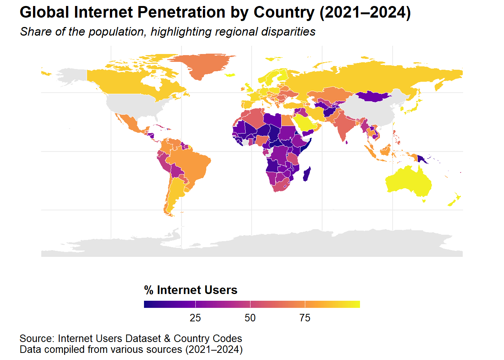
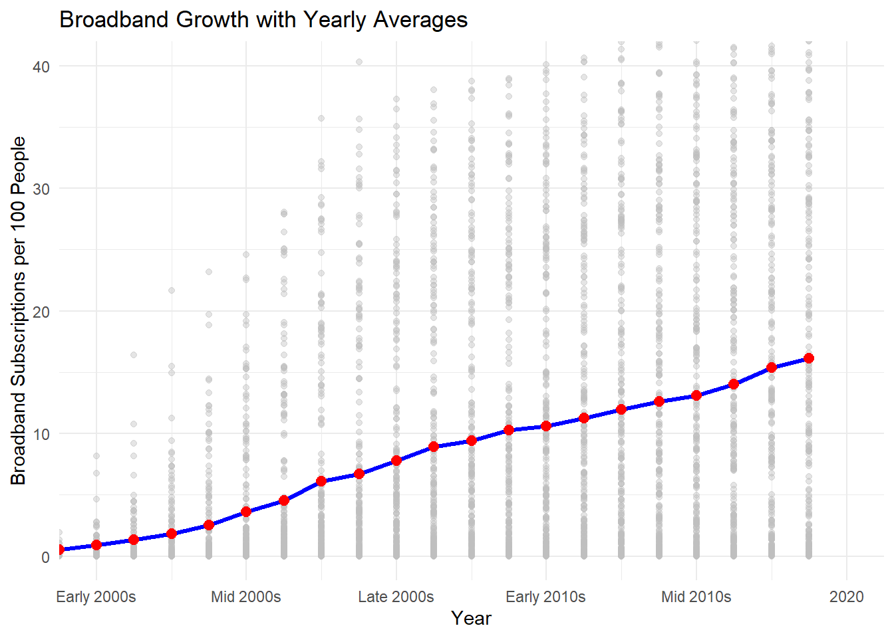

Data Analysis · R Markdown
Documented
R Internet Analysis
A descriptive R Markdown study of how internet access and fixed-broadband adoption vary across countries, regions, and economic contexts. Multiple public datasets and geographic boundaries are prepared, joined, visualized, and published as a knitted HTML report.
 R
R- R Markdown
- ggplot2
- sf
- Role
- Analyst & report author
- Type
- R Markdown study
- Focus
- Internet access & broadband

Overview
Analysis question
How do internet use and fixed-broadband adoption vary across countries, regions, and economic contexts, and what patterns appear in a separate labelled platform-sentiment sample? The report brings several public sources into one descriptive view of those questions.
My role
I assembled the datasets, prepared and joined their fields in R, built the visualizations, interpreted the visible patterns, and authored the final R Markdown report.
What was built
The knitted report combines country-level internet observations, fixed-broadband history, income and GDP tables, Gapminder variables, a labelled sentiment sample, and Natural Earth geometry. Its outputs include maps, distributions, time-based summaries, regional comparisons, and exploratory relationship plots.
- Map matched country observations to show the geographic spread of internet access.
- Summarize fixed-broadband records by year and region for descriptive comparison.
- Explore income, GDP, urbanization, and sentiment patterns without presenting them as causal results.

Inside the Build
- Sources
- CSV inputs cover internet users, fixed broadband, income groups, GDP, Gapminder variables, and labelled sentiment; Natural Earth supplies country geometry.
- Prepare
readr,dplyr, andtidyrimport data, rename inconsistent fields, trim labels, filter missing rows, and prepare grouped summaries.- Join
- Country-code and exact-name joins connect regional, economic, internet, and geographic records. Unmatched names are retained as an explicit limitation.
- Visualize
ggplot2,sf,viridis, andggalluvialproduce the charts and map before R Markdown knits the report to HTML.
From source files to a knitted report
case_when, and compare platform shares; no sentiment model is trained.
Challenges & Takeaways
Technical challenge
Country identifiers differ across sources, and the internet observations do not share one uniform year. The exact-name map join leaves 52 of 215 internet records unmatched. A separate income branch substitutes 10 for 37 missing 2022 values, so those charts are not featured here.
How it was addressed
Column names were normalized, code- and name-based joins were applied, missing regions were filtered where required, and unmatched countries were inspected. The remaining gaps are disclosed rather than interpreted as measured values.
Observed finding & takeaway
The connected annual fixed-broadband means rise across the displayed source period, while the pooled regional output differs substantially. Join quality, time alignment, and missing-value treatment shape that story; the charts do not establish why the patterns occur.
Future improvement
Use a documented ISO-country crosswalk, align measurements to a common year, preserve missing values instead of substituting constants, and publish the data manifest and package versions needed to knit the report from a clean clone.
20.5EuropeAverage fixed-broadband subscriptions per 100 people10.0AmericasAverage fixed-broadband subscriptions per 100 people6.43AsiaAverage fixed-broadband subscriptions per 100 people6.11OceaniaAverage fixed-broadband subscriptions per 100 people1.05AfricaAverage fixed-broadband subscriptions per 100 peopleThese are unweighted means across matched country-year records pooled over the full source period. They are not current regional rates, statistical significance results, or evidence of causation.